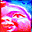
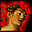
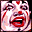
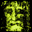

Images Are Dangerous
Images Are Dangerous
|
Dangerous Images
 "I thought," Rob Brezsny laughed over the phone, "that I'd share how I used to be, before I had to tone myself down a bit for mass publication." And so he sent these two poems, taken from his 1984 book Images Are Dangerous (Jazz Press). Unfortunately, this book couldn't be more out of print. The press went out of business and their warehouse burned down. No shit. However, reprint rumblings are in the works. In the meantime, we offer below these words from Santa Cruz, CA's best loved shaman-trickster-rockstar-janitor-astrologer-poet: HERE'S HOW YOU GET TO KNOW ME BETTER:
First you always pretend you mean
Plagiarize only the most life-like automatic gestures

I hate myself for loving everything so much--
Personality is a performance. Never act like yourself.
If you like this religion,
If you find the most beautiful crucifixes in the world
If you scratch an emerald light from faces in the sink
If you live in a closet with fathers
If you tell dyke punk witches to make me nervous
Do you really believe that everyone should be like you?
LOVE BOMB
I feel much closer to all of you when we pretend we're all fighting real dangers together in order to stay alive. The telepathic links among us heat up when our bodies register the information that we may really die horribly together all at once.
The nuclear bomb is our group totem. It's the ultimately powerful and sacred taboo, the most terrible and the most valuable thing, the superhuman profanity on which all life depends and against which all values must be tested. Shadowing every one of our personal actions, the bomb is the god that won't listen, the fascinating blasphemy that won't shut up unless we're all very, very good.
We fall down before it, believing in it more fiercely than any other secret. We agree to be possessed by it, to be haunted by its image above all other images. Nothing else has more life.
We love this bomb because it's the most spiritual, most supernatural material object in the world, the only material object that's ever had the power to literally change all life on earth instantly and forever. It's the one most precious fetish, the obvious and hidden revelation that can by itself redefine the meaning of all history.
And yet how few of us have ever stood next to the magic body of the bomb, breathed in its smell, touched it, communed with its actual life. Its presence among us is rumour and mystery, like Christ and flying saucers. We hear stories.

At night our dreams turn the bomb into the philosopher's stone, the ark of the covenant, the alchemical gold, the magic body of the messiah, the potent drug from the beginning of the world, the ecstatic and shocking moment of religious conversion. In our deepest darkest juices we are alive to its divinity, as we are alive to any god that offers the brilliant and blinding flash of irreversible illumination. We believe in the bomb because it reveals what it is to become the dangerous light that's as pure as the sun.
Let's call the bomb a love that's too big for us to understand yet. Let's say it's the raging creative life of a cleansing disease that wants to cure us so it doesn't have to kill us. Let's say it's the last judgment that promises not to come true if we can figure out what it means.
It's our bomb. We've made it. We've loved this bomb so much we've imagined it to exist. We've created this bomb so hard that it's come alive and possessed us. We've turned the bomb into our bodies; we've given messages to chemicals in our brains to make dangerous images of the bomb, messages to nurture and worship and flash those images through our nerves.
Remember. The bomb is the most beloved thing to us because as we all together imagine it now our brains are burned with the true hallucination that we are all one body. Whe I fantasize the bomb vaporizing me into its own pure primeval heat and radiation, I remember that you and I are made of the same stuff. The bomb frees us to imagine that we all live and die together, that we are all born out of Adam, the indivisible hermaphrodite god of our species--and we can return now because we've never left.
We need the bomb.
We need the bomb because only the tease of the biggest, most original sin can heal us. The bomb is a blind, a fake, a trick of memory we're sending ourselves from the future that shocks us better than all the Christs and cancers and UFO's. It makes us. It makes us remember. The bomb has been with us since the beginning of time because it's the imagination of the end of time.

We have supernatural powers and genetic potentials so undreamed of that they will feel like magic when they come. But they remain dormant in us until we're scared shitless not just of our individual deaths but also the the extinction of the human archetype.
Bless this fear. Praise the bomb. O God of Good and Evil Light, let the great ugly power fascinate us all now, hypnotize us and fix our terror so precisely that we become one potently concentrated demonic imagination, a single guerrilla mediator casting an irreversible spell to bind the great satan bomb. There will be no nuclear war.
Back to the Table of Contents.
Surf the Boulevards network
to other great alternative
content sites.
|